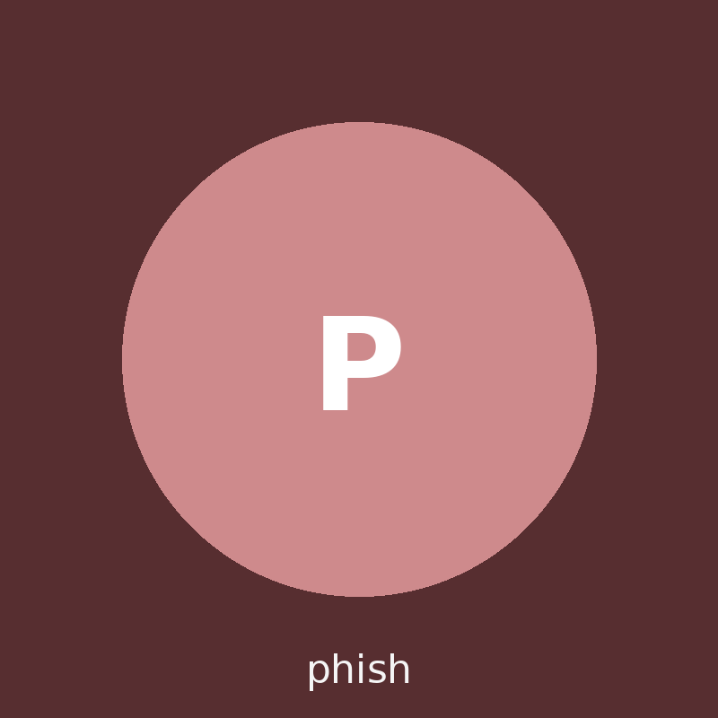

📁 Mapa de Operaciones - Liceo
1. Dirección
C.I.D. aplicado a CREA
Pendiente
2. Adscripción
Perfiles y conducta digital
Pendiente
3. Sala de Informática
Claves y MFA (Gmail/CREA)
Pendiente
4. Grupo de Clase
Ingeniería social (mensajes/QR)
Pendiente
5. WiFi del Liceo
Dispositivos conectados
Pendiente
1. Dirección: C.I.D. en el día a día
Informe de la Dra. Vega
Bienvenido/a, Agente. Primer caso: alguien entró a un curso de CREA y empezó a mirar material que no le corresponde. Tu tarea es identificar qué pilar de la tríada C.I.D. se compromete en cada situación y recuperar el control.
ASIGNACIÓN C.I.D. (LICEO + PLATAFORMAS)
Selecciona el principio de la tríada (Confidencialidad, Integridad, Disponibilidad) que se compromete más en cada caso:
2. Sector Reclutamiento: El Código Fantasma
Informe de Kai Byte
Agente, el problema se complica. Hay un 'Código Fantasma' operando dentro de ATLAS, alguien con acceso y conocimientos internos. Mi preocupación es que podría ser una de nuestras nuevas incorporaciones. Debemos entender que no todos los 'hackers' son iguales; hay quienes buscan proteger (Sombreros Blancos), quienes operan en la ambigüedad (Sombreros Grises) y quienes buscan el daño (Sombreros Negros). Es vital discernir sus intenciones para proteger nuestra red. Analiza estos perfiles y clasifica a cada agente. Luego, y esto es crucial, elige a tu Sospechoso Principal. Tu elección activará la siguiente fase de nuestra investigación.
CLASIFICACIÓN DE AGENTES (EL CÓDIGO FANTASMA)
Clasifica a cada agente según sus actitudes (Blanco, Gris, Negro). Cada error restará puntos. Debes clasificar a los tres para poder elegir un sospechoso.
Elige a tu Sospechoso Principal
Clasifica a los tres agentes arriba para habilitar la selección.
3. Sector Identidad Digital: El Código de Acceso
Informe de la Dra. Cipher
Agente, hemos contenido un intento masivo de 'Credential Stuffing' gracias a nuestra Autenticación Multifactor (MFA). Pero la realidad es que no todas tus cuentas personales tienen esta protección. La MFA es una capa de seguridad vital que exige dos o más pruebas para verificar tu identidad: algo que sabes (tu contraseña), algo que tienes (un código de tu móvil) o algo que eres (tu huella dactilar). Mi preocupación es que sin ella, tus cuentas son vulnerables. Para continuar, deberás explorar una 'habitación oscura' de nuestro sistema de pruebas y encontrar un código, una clave numérica de 4 cifras que restaurá el acceso al sistema de credenciales crítico. Pista: ten en cuenta cuales son las buenas prácticas de gestión de credenciales.
4. Sector Seguridad Interna: Ingeniería Social

Informe del Agente Phish
Agente, estoy seriamente preocupado por una serie de incidentes que no encajan con los patrones de ataques habituales. No son fallas de software o contraseñas débiles. Es como si a la gente... simplemente se la hubiera manipulado para que hiciera cosas que no debía. Esto es Ingeniería Social, el arte oscuro de la persuasión. Los atacantes explotan nuestra confianza, nuestra curiosidad, nuestro miedo, o sobre todo, nuestra **urgencia**, para que les demos información o hagamos clic donde no debemos. Necesito que converses con nuestro chatbot de simulación de buenas prácticas en este Genially. Aprende a identificar las maniobras y, al finalizar el entrenamiento, obtendrás la clave.
5. Sector Innovación: Vulnerabilidad IoT
Informe del Ing. Nodea
Agente, hemos llegado al último punto. En ATLAS, hemos abrazado la tecnología IoT (Internet de las Cosas) para optimizar procesos, desde el control ambiental hasta la seguridad perimetral con cámaras inteligentes. Esto nos permite una eficiencia sin precedentes. Pero mi gran preocupación es que, si no se usan correctamente, estas tecnologías nos exponen a nuevos riesgos. Recuerdo que, en su momento, la persona encargada de la instalación de una cámara de seguridad en un sector remoto hizo varias preguntas y me comentó que por defecto, la clave inicial de esa cámara específica es 'NODE'. La gran pregunta es: ¿La habrá cambiado? El 'Código Fantasma' se infiltró a través de una configuración insegura de una cámara IoT. Esto me genera muchísimas dudas, Agente. Intenta ayudarnos a descubrir qué falló.
SEGURIDAD EN DISPOSITIVOS IoT
Selecciona la medida más crítica para mitigar el riesgo de una cámara IoT con credenciales de fábrica. Cada error restará puntos.
Última Oportunidad: ¿Quién es el Código Fantasma?
Con toda la información recopilada, ¿confirma tu sospechoso o cambias de culpable?
Puntuación final: 0